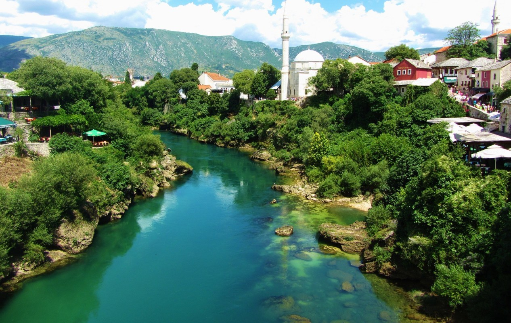
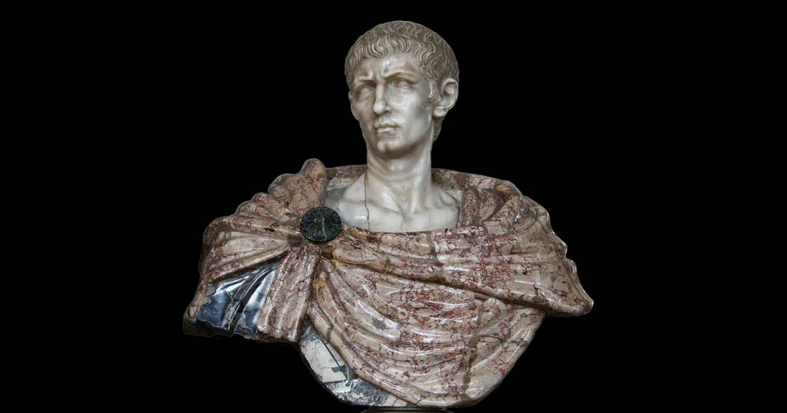
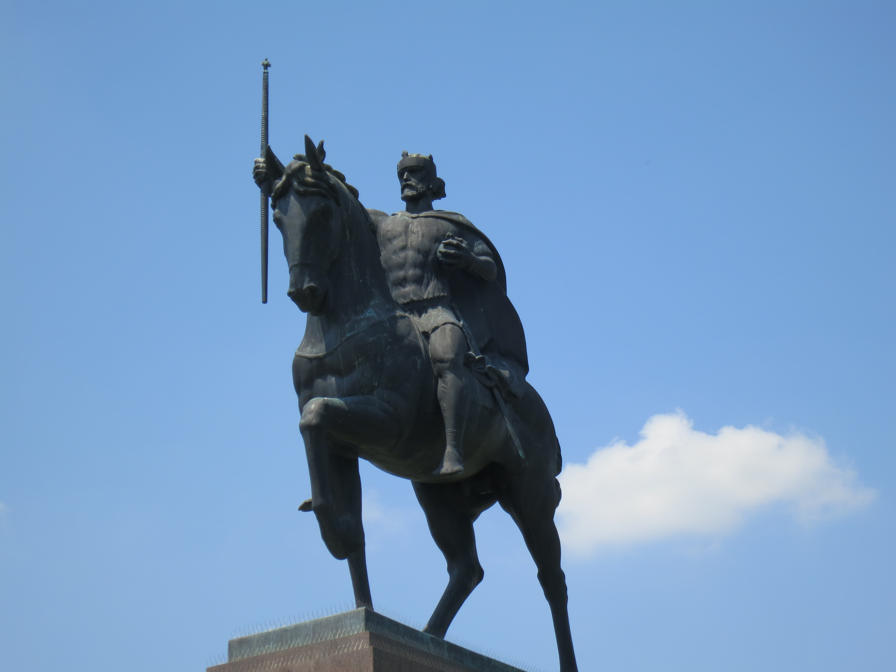
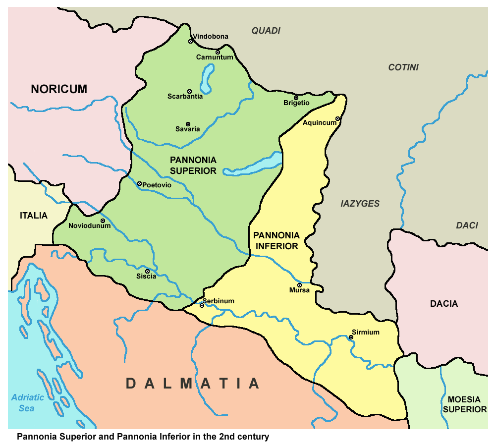
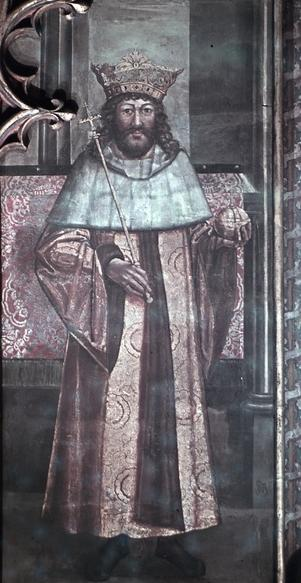
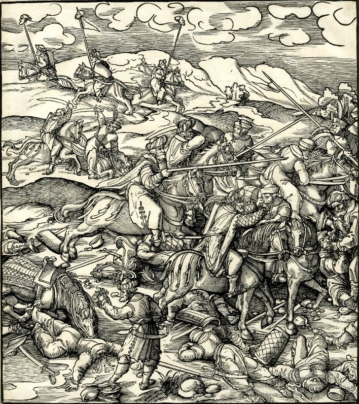
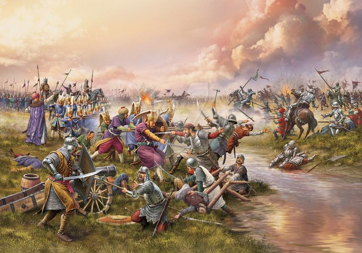
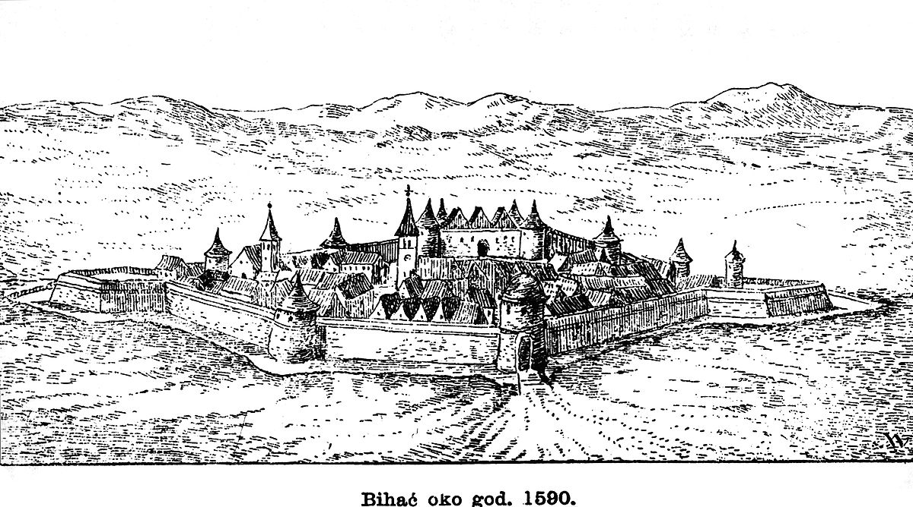
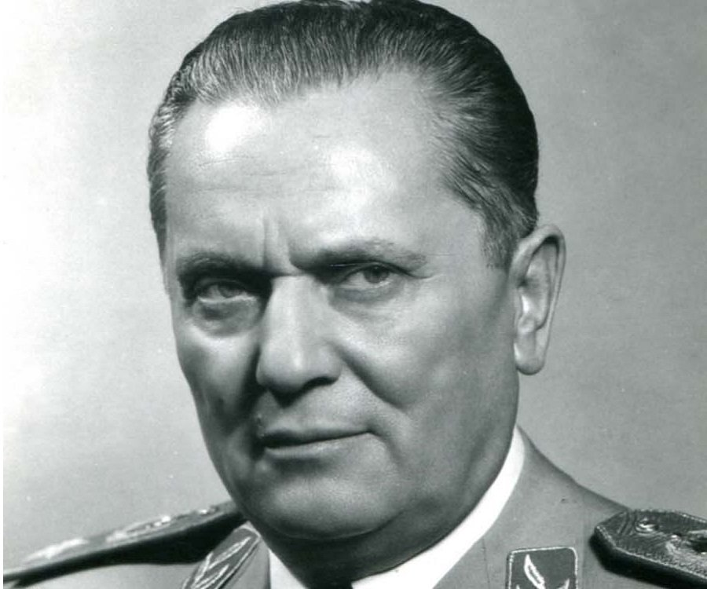
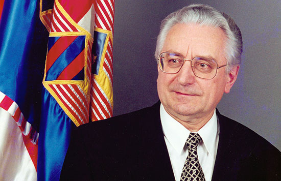

Dalmatia was the northern part of the Illyrian kingdom between
the 4th century BC until the Illyrian Wars in the 220s BC and 168
BC when the Roman Republic established its protectorate south of
the river Neretva. The area north of the Neretva was slowly
incorporated into Roman possession until the province of Illyricum
was formally established c. 32–27 BC. The Dalmatia region then
became part of the Roman province of Illyricum. Between 6 and 9
AD the Dalmatians raised the last in a series of revolts together
with the Pannonians, but it was finally crushed and in 10 AD
Illyricum was split into two provinces, Pannonia and Dalmatia.
The province of Dalmatia spread inland to cover all of the Dinaric
Alps and most of the eastern Adriatic coast.

River Neretva
Dalmatia was the
birthplace of the Roman Emperor Diocletian, who, upon retirement
from Emperor in AD 305, built a large palace near Salona, out of
which the city of Split later developed. Historians such as Theodore
Mommsen and Bernard Bavant argue that all Dalmatia was fully
romanized and Latin speaking by the 4th century. Others, such as
Aleksandar Stipčević, argue that the process of romanization was
rather selective and involved mostly urban centers but not the
countryside, where previous Illyrian socio-political structures
were adapted to Roman administration and political structure
only in some necessities.

Roman Emperor Diocletian
Stanko Guldescu argued that the Vlachs, or Morlachs, were Latin
speaking and pastoral peoples who lived in the Balkan mountains
since pre-Roman times, and they are mentioned in the oldest Croatian
chronicles After the Western Roman Empire collapsed in 476, with the
beginning of the Migration Period, Julius Nepos shortly ruled his
diminished domain from the Diocletian palace after his 476 flight
from Italy. The region was then ruled by the Ostrogoths up to 535,
when Justinian I added the territory to the Byzantine Empire. Later,
the Byzantines formed the Theme of Dalmatia in the same territory. The
Roman period ends with Avar and Croat invasions in the 6th and 7th centuries
and the destruction of almost all Roman towns. Roman survivors retreated
to more favourable sites on the coast, islands and mountains. The city of
Ragusa was founded by such survivors from Epidaurum.
According to the work De Administrando Imperio written by the
10th-century Byzantine Emperor Constantine VII, the Croats had
arrived in what is today Croatia, from southern Poland, south of
Kraków in the early 7th century, however that claim is disputed and
competing hypotheses date the event between the 6th and the 9th centuries.
Eventually two dukedoms were formed-Duchy of Pannonia and Duchy of Dalmatia,
ruled by Liudewit and Borna, as attested by chronicles of Einhard
starting in the year 818. The record represents the first document
of Croatian realms, vassal states of Francia at the time. The Frankish
overlordship ended during the reign of Mislav two decades later. According
to the Constantine VII christianization of Croats began in the 7th century,
but the claim is disputed and generally christianization is associated with
the 9th century. In 879, under duke Branimir, the duke of Croats, Dalmatian
Croatia received papal recognition as a state from Pope John VIII.
Tomislav was the first ruler of Croatia who was styled a king in a
letter from the Pope John X, dating kingdom of Croatia to year 925.
Tomislav defeated Hungarian and Bulgarian invasions, spreading the
influence of Croatian kings. The medieval Croatian kingdom reached
its peak in the 11th century during the reigns of Petar Krešimir IV (1058–1074)
and Dmitar Zvonimir (1075–1089). When Stjepan II died in 1091 ending the
Trpimirović dynasty, Ladislaus I of Hungary claimed the Croatian crown.
Opposition to the claim led to a war and personal union of Croatia and
Hungary in 1102, ruled by Coloman.

King Tomislav
The consequences of the change to the Hungarian king included the
introduction of feudalism and the rise of the native noble families
such as Frankopan and Šubić. The later kings sought to restore some
of their previously lost influence by giving certain privileges to the
towns. For the next four centuries, the Kingdom of Croatia was ruled by
the Sabor (parliament) and a Ban (viceroy) appointed by the king. The
princes of Bribir from the Šubić family became particularly influential,
asserting control over large parts of Dalmatia, Slavonia and Bosnia.
Later, however, the Angevins intervened and restored royal power. The
period saw rise of native nobility such as the Frankopans and the Šubićs
to prominence and ultimately numerous Bans from the two families.

Separate coronation as King of Croatia was gradually allowed to fall into
abeyance and last crowned king is Charles Robert in 1301 after which Croatia
contented herself with a separate diploma inaugurale. The reign of Louis the
Great (1342–1382) is considered the golden age of Croatian medieval history.
Ladislaus of Naples also sold the whole of Dalmatia to Venice in 1409. The
period saw increasing threat of Ottoman conquest and struggle against the
Republic of Venice for control of coastal areas. The Venetians gained control
over most of Dalmatia by 1428. With exception of the city-state of Dubrovnik
which became independent, the rule of Venice on most of Dalmatia will last nearly
four centuries (c. 1420 – 1797). In 1490 the estates of Croatia declined to recognize
Vladislaus II until he had taken oath to respect their liberties, and insisted
upon his erasing from the diploma certain phrases which seemed to reduce Croatia
to the rank of a mere province. The dispute was solved in 1492.

Vladislaus
As the Turkish incursion into Europe started, Croatia once again became a border
area. The Croats fought an increasing number of battles and gradually lost increasing
swathes of territory to the Ottoman Empire. Ottoman conquests led to the 1493 Battle of
Krbava field and 1526 Battle of Mohács, both ending in decisive Ottoman victories.
King Louis II died at Mohács, and in November 1526, a Hungarian parliament elected
János Szapolyai as the new king of Hungary. In December 1526, an other Hungarian
parliament elected Ferdinand Habsburg as King of Hungary. On the other side, the
Croatian Parliament met in Cetin and chose Ferdinand I of the House of Habsburg as
new ruler of Croatia, under the condition that he provide protection to Croatia
against the Ottoman Empire while respecting its political rights. A few years later
both crown would be again united in Habsburgs hands and the union would be restored.
The Ottoman Empire further expanded in the 16th century to include most of Slavonia,
western Bosnia (then called Turkish Croatia) and Lika. Ottoman Croatia initially was
part of Rumelia Eyalet, and later was parts of Budin Eyalet, Bosnia Eyalet and Kanije
Eyalet.

1493 Battle of Krbava
Later in the same century, Croatia was so weak that its parliament authorized Ferdinand
Habsburg to carve out large areas of Croatia and Slavonia adjacent to the Ottoman Empire
for the creation of the Military Frontier (Vojna Krajina, German: Militaergrenze) which
would be ruled directly from Vienna's military headquarters. The area became rather deserted
and was subsequently settled by Serbs, Vlachs, Croats and Germans and others. As a result
of their compulsory military service to the Habsburg Empire during conflict with the Ottoman
Empire, the population in the Military Frontier was free of serfdom and enjoyed much political
autonomy, unlike the population living in the parts ruled by Hungary.

1526 Battle of Mohács
After the Bihać fort finally fell in 1592, only small parts of Croatia remained unconquered.
The Ottoman army was successfully repelled for the first time on the territory of Croatia
following the battle of Sisak in 1593. The lost territory was partially restored, except for
large parts of today's Bosnia and Herzegovina, Lika and Slavonia regions of present Croatia.
By the 18th century, the Ottoman Empire was driven out of Hungary, and Austria brought the
empire under central control. Empress Maria Theresa of Austria was supported by the
Croatians in the War of Austrian Succession of 1741–1748 and subsequently made significant
contributions to Croatian matters. With the fall of the Venetian Republic in 1797, its
possessions in eastern Adriatic became subject to a dispute between France and Austria.
The Habsburgs eventually secured them (by 1815) and Dalmatia and Istria became part of
the empire, though they were in Cisleithania while Croatia and Slavonia were under
Hungary.

Croatian romantic nationalism emerged in the mid-19th century to counteract the
apparent Germanization and Magyarization of Croatia. The Illyrian movement attracted
a number of influential figures from the 1830s on, and produced some important
advances in the Croatian language and culture. In the Revolutions of 1848 the Triune
Kingdom of Croatia, Slavonia and Dalmatia, driven by fear of Magyar nationalism,
supported the Habsburg court against Hungarian revolutionary forces. However, despite
the contributions of its ban Jelačić in quenching the Hungarian war of independence,
Croatia, not treated any more favourably by Vienna than the Hungarians themselves, lost
its domestic autonomy. In 1867 the Dual Monarchy was created; Croatian autonomy was restored
in 1868 with the Croatian–Hungarian Settlement which was comparatively favourable for the
Croatians, but still problematic because of issues such as the unresolved status of Rijeka.
World War I brought an end to the Habsburg Empire.
Croatia suffered great loss of life in the war, and while there was some late
effort to establish a Croatian section of the Empire, ultimately the military
defeat led to the establishment of a separate South Slavic state, which would
later be named Yugoslavia. Shortly before the end of the First World War in 1918,
the Croatian Parliament severed relations with Austria-Hungary as the Entente armies
defeated those of the Habsburgs. Croatia and Slavonia became a part of the State of
Slovenes, Croats and Serbs composed out of all Southern Slavic territories of the now
former Austro-Hungarian Monarchy with a transitional government headed in Zagreb.
The creation of Yugoslavia happened in late 1918: after Srijem left Croatia-Slavonia and
joined Serbia together with Vojvodina, shortly followed by a referendum to join Bosnia and
Herzegovina to Serbia, the People's Council of Slovenes, Croats and Serbs (Narodno vijeće),
guided by what was by that time a half a century long tradition of pan-Slavism and without sanction
of the Croatian sabor, joined the Kingdom of Serbia into the Kingdom of the Serbs, Croats and Slovenes.
Although the state inherited much of Austro-Hungary's military arsenal, including the entire fleet,
the Kingdom of Italy moved rapidly to annex the state's most western territories, promised to her by
the Treaty of London of 1915. An Italian Army eventually took Istria, started to annex the Adriatic
islands one by one, and even landed in Zadar. Partial resolution to the so-called Adriatic Question
would come in 1920 with the Treaty of Rapallo.
The Kingdom underwent a crucial change in 1921 to the dismay of Croatia's largest political party,
the Croatian Peasant Party (Hrvatska seljačka stranka). The new constitution abolished the
historical/political entities, including Croatia and Slavonia, centralizing authority in the capital
of Belgrade. The Croatian Peasant Party boycotted the government of the Serbian People's Radical Party
throughout the period, except for a brief interlude between 1925 and 1927, when external Italian
expansionism was at hand with her allies, Albania, Hungary, Romania and Bulgaria that threatened
Yugoslavia as a whole. In the early 1920s the Yugoslav government of Serbian prime minister Nikola
Pasic used police pressure over voters and ethnic minorities, confiscation of opposition pamphlets
and other measures of election rigging to keep the opposition, and mainly the Croatian Peasant Party
and its allies in minority in Yugoslav parliament. Pasic believed that Yugoslavia should be as centralized
as possible, creating in place of distinct regional governments and identities a Greater Serbian national
concept of concentrated power in the hands of Belgrade.
During a Parliament session in 1928, the Croatian Peasant Party's leader Stjepan Radić was
mortally wounded by Puniša Račić, a deputy of the Serbian Radical People's Party, which
caused further upsets among the Croatian elite. In 1929, King Aleksandar proclaimed a
dictatorship and imposed a new constitution which, among other things, renamed the country
the Kingdom of Yugoslavia. The territory of Croatia was largely divided into the territories
of the Sava and Littoral Banates. Political parties were banned from the start and the royal
dictatorship took on an increasingly harsh character. Vladko Maček, who had succeeded Radić
as leader of the Croatian Peasant Party, the largest political party in Croatia, was imprisoned,
and members of a newly emerging insurgent movement, the Ustaše, went into exile. According to the
British historian Misha Glenny the murder in March 1929 of Toni Schlegel, editor of a pro-Yugoslavian
newspaper Novosti, brought a "furious response" from the regime. In Lika and west Herzegovina in
particular, which he described as "hotbeds of Croatian separatism," he wrote that the majority-Serb
police acted "with no restraining authority whatsoever."
In the words of a prominent Croatian writer, Shlegel's death became the pretext for terror in all
forms. Politics was soon "indistinguishable from gangsterism." Even in this oppressive climate, few
rallied to the Ustaša cause and the movement was never able to organise within Croatia. But its
leaders did manage to convince the Communist Party that it was a progressive movement. The party's
newspaper Proleter (December 1932) stated: "[We] salute the Ustaša movement of the peasants of Lika
and Dalmatia and fully support them." In 1934, King Aleksandar was assassinated abroad, in Marseille,
by a coalition of the Ustaše and a similarly radical movement, the Bulgarian VMORO. The Serbian-Croatian
Cvetković-Maček government that came to power, distanced Yugoslavia's former allies of France and the
United Kingdom, and moved closer to Fascist Italy and Nazi Germany in the period of 1935–1941. A
national Banovina of Croatia was created in 1939 out of the two Banates, as well as parts of the Zeta,
Vrbas, Drina and Danube Banates. It had a reconstructed Croatian Parliament which would choose a Croatian
Ban and Viceban. This Croatia included a part of Bosnia, most of Herzegovina and the city of Dubrovnik
and the surroundings.
The Axis occupation of Yugoslavia in 1941 allowed the Croatian radical right Ustaše to come into power,
forming the "Independent State of Croatia" (Nezavisna Država Hrvatska, NDH), led by Ante Pavelić, who
assumed the role of Poglavnik. Following the pattern of other fascist regimes in Europe, the Ustashi
enacted racial laws, formed eight concentration camps targeting minority Serbs, Romas and Jewish
populations, as well as Croatian and Bosnian Muslim partisans. The biggest concentration camp was
Jasenovac in Croatia. The NDH had a program, formulated by Mile Budak, to purge Croatia of Serbs,
by "killing one third, expelling the other third and assimilating the remaining third". The main
targets for persecution were the Serbs, with approximately 330,000 were killed.
The anti-fascist communist-led Partisan movement, based on pan-Yugoslav ideology, emerged in early 1941,
under the command of Croatian-born Josip Broz Tito, spreading quickly into many parts of Yugoslavia. The
1st Sisak Partisan Detachment, often hailed as the first armed anti-fascist resistance unit in occupied
Europe, was formed in Croatia, in the Brezovica Forest near the town of Sisak. As the movement began to
gain popularity, the Partisans gained strength from Croats, Bosniaks, Serbs, Slovenes, and Macedonians
who believed in a unified, but federal, Yugoslav state.
By 1943, the Partisan resistance movement had gained the upper hand, against the odds, and in 1945, with
help from the Soviet Red Army (passing only through small parts such as Vojvodina), expelled the Axis
forces and local supporters. The ZAVNOH, state anti-fascist council of people's liberation of Croatia,
functioned since 1942 and formed an interim civil government by 1943. NDH's ministers of War and Internal
Security Mladen Lorković and Ante Vokić tried to switch to Allied side.

Josip Broz Tito
Pavelić was in the beginning supporting them but when he found that he would need to leave his
position he imprisoned them in Lepoglava prison where they were executed. Following the defeat of
the Independent State of Croatia at the end of the war, a large number of Ustaše, civilians supporting
them (ranging from sympathizers, young conscripts, anti-communists, and ordinary serfs who were motivated
by Partisan atrocities), Chetniks and anti-Communists attempted to flee in the direction of Austria
hoping to surrender to British forces and to be given refuge. They were instead interned by British
forces and then returned to the Partisans.
Croatia was a Socialist Republic part of a six-part Socialist Federative Republic of Yugoslavia.
Under the new communist system, privately owned factories and estates were nationalized, and the
economy was based on a type of planned market socialism. The country underwent a rebuilding process,
recovered from World War II, went through industrialization and started developing tourism.
The country's socialist system also provided free apartments from big companies, which with the workers'
self-management investments paid for the living spaces. From 1963, the citizens of Yugoslavia were allowed
to travel to almost any country because of the neutral politics. No visas were required to travel to eastern
or western countries, or to capitalist or communist nations.
Such free travel was unheard of at the time in the Eastern Bloc countries, and in some western countries as
well (e.g., Spain or Portugal, both dictatorships at the time). This proved to be very helpful for Croatia's
inhabitants who found working in foreign countries more financially rewarding. Upon retirement, a popular plan
was to return to live in Croatia (then Yugoslavia) to buy a more expensive property.
In Yugoslavia, the people of Croatia were guaranteed free healthcare, free dental care, and secure pensions.
The older generation found this very comforting as pensions would sometimes exceed their former paychecks.
Free trade and travel within the country also helped Croatian industries that imported and exported
throughout all the former republics.
Students and military personnel were encouraged to visit other republics to learn more about the
country, and all levels of education, especially secondary education and higher education, were free.
In reality the housing was inferior with poor heat and plumbing, the medical care often lacking even
in availability of antibiotics, schools were propaganda machines and travel was a necessity to provide
the country with hard currency. The propagandists, who want people to believe "neutral policies"
equalized Serbs and Croats, severely restricted free speech and did not protect citizens from ethnic
attacks.
Membership in the party was as much a prerequisite for admission to colleges and for government jobs
as in the Soviet Union under Joseph Stalin or Nikita Khrushchev. Private sector businesses did not
grow as the taxes on private enterprise were often prohibitive. Inexperienced management sometimes
ruled policy and controlled decisions by brute force. Strikes were forbidden, owners/managers were
not permitted to make changes or decision which would impact their productivity or profit.
The economy developed into a type of socialism called samoupravljanje (self-management), in
which workers controlled socially owned enterprises. This kind of market socialism created
significantly better economic conditions than in the Eastern Bloc countries. Croatia went
through intensive industrialization in the 1960s and 1970s with industrial output increasing
several-fold and with Zagreb surpassing Belgrade for the amount of industry. Factories and
other organizations were often named after Partisans who were declared national heroes. This
practice also spread to street names, names of parks and buildings, and some more trivial
features.
Before World War II, Croatia's industry was not significant, with the vast majority of the
people employed in agriculture. By 1991 the country was completely transformed into a modern
industrialized state. By the same time, the Croatian Adriatic coast had taken shape as an
internationally popular tourist destination, all coastal republics (but mostly SR Croatia)
profited greatly from this, as tourist numbers reached levels still unsurpassed in modern
Croatia. The government brought unprecedented economic and industrial growth, high levels
of social security and a very low crime rate. The country completely recovered from WWII and
achieved a very high GDP and economic growth rate, significantly higher than those of the
present-day republic.
The constitution of 1963 balanced the power in the country between the Croats and the Serbs and
alleviated imbalance coming from the fact that the Croats were again in a minority position.
Trends after 1965 (like the fall of OZNA and UDBA chief Aleksandar Ranković from power in 1966),
however, led to the Croatian Spring of 1970–71, when students in Zagreb organized demonstrations
to achieve greater civil liberties and greater Croatian autonomy. The regime stifled the public
protest and incarcerated the leaders, but this led to the ratification of a new constitution in
1974, giving more rights to the individual republics. At that time, radical Ustaše cells of Croatian
émigrés in Western Europe planned and carried out guerilla acts inside Yugoslavia, but they were
largely countered.
In 1980, after Tito's death, economic, political, and religious difficulties started to
mount and the federal government began to crumble. The crisis in Kosovo and, in 1986, the
emergence of Slobodan Milošević in Serbia provoked a very negative reaction in Croatia and
Slovenia; politicians from both republics feared that his motives would threaten their republics'
autonomy. With the climate of change throughout Eastern Europe during the 1980s, the communist
hegemony was challenged (at the same time, the Milošević government began to gradually concentrate
Yugoslav power in Serbia and calls for free multi-party elections were becoming louder).
In June 1989 the Croatian Democratic Union (HDZ) was founded by Croatian nationalist
dissidents led by Franjo Tuđman, a former fighter in Tito's Partisan movement and JNA
General. At this time Yugoslavia was still a one-party state and open manifestations of
Croatian nationalism were dangerous so a new party was founded in an almost conspiratorial
manner. It was only on 13 December 1989 that the governing League of Communists of Croatia
agreed to legalize opposition political parties and hold free elections in the spring of
1990.
On 23 January 1990 at its 14th Congress the Communist League of Yugoslavia voted to remove
its monopoly on political power, but the same day effectively ceased to exist as a national
party when the League of Communists of Slovenia walked out after Serbia's Slobodan Milošević
blocked all their reformist proposals—the League of Communists of Croatia walked out soon
after.
On 22 April and 7 May 1990, the first free multi-party elections were held in
Croatia. Franjo Tuđman's Croatian Democratic Union (HDZ) won by a 42% margin
against Ivica Račan's reformed communist Party of Democratic Change (SDP) who
won 26%. However, Croatia's first-past-the-post election system enabled Tuđman
to form the government relatively independently as the win translated into 205
mandates (out of 351 total). The HDZ's intentions were to secure independence
for Croatia, contrary to the wishes of a part of the ethnic Serbs in the republic,
and federal politicians in Belgrade. The excessively polarized climate soon escalated
into complete estrangement between the two nations and spiralled into sectarian
violence.

Franjo Tuđman
On 25 July 1990, a Serbian Assembly was established in Srb, north of Knin, as the
political representation of the Serbian people in Croatia. The Serbian Assembly declared
"sovereignty and autonomy of the Serb people in Croatia". Their position was that if
Croatia could secede from Yugoslavia, then the Serbs could secede from Croatia.
Milan Babić, a dentist from the southern town of Knin, was elected president. The
rebel Croatian Serbs established a number of paramilitary militias under the
leadership of Milan Martić, the police chief in Knin.
On 17 August 1990, the Serbs began what became known as the Log Revolution, where
barricades of logs were placed across roads throughout the South as an expression
of their secession from Croatia. This effectively cut Croatia in two, separating
the coastal region of Dalmatia from the rest of the country. The Croatian government
responded to the blockade of roads by sending special police teams in helicopters to
the scene, but they were intercepted by SFR Yugoslav Air Force fighter jets and
forced to turn back to Zagreb.
The Croatian constitution was passed in December 1990 categorizing Serbs
as a minority group along with other ethnic groups. Babić's administration
announced the creation of a Serbian Autonomous Oblast of Krajina (or SAO Krajina)
on 21 December 1990. Other Serb-dominated communities in eastern Croatia announced
that they would also join SAO Krajina and ceased paying taxes to the Zagreb
government.
On Easter Sunday, 31 March 1991, the first fatal clashes occurred when Croatian
police from the Croatian Ministry of the Interior (MUP) entered the Plitvice
Lakes national park to expel rebel Serb forces. Serb paramilitaries ambushed
a bus carrying Croatian police into the national park on the road north of
Korenica, sparking a day-long gun battle between the two sides. During the
fighting, two people, one Croat and one Serb policeman, were killed. Twenty
other people were injured and twenty-nine Krajina Serb paramilitaries and
policemen were taken prisoner by Croatian forces. Among the prisoners was
Goran Hadžić, later to become the President of the Republic of Serbian
Krajina.
On 2 May 1991 the Croatian parliament voted to hold a referendum on
independence. On 19 May 1991, on an almost 80% turnout, 93.24% voted
for independence. Krajina boycotted the referendum. They held their own
referendum a week earlier on 12 May 1991 in the territories they
controlled and voted to remain in Yugoslavia which the Croatian
government did not recognize as valid. On 25 June 1991 the Croatian
Parliament declared independence from Yugoslavia. Slovenia declared
independence from Yugoslavia on the same day.
The civilian population fled the areas of armed conflict en masse:
generally speaking, hundreds of thousands of Croats moved away from
the Bosnian and Serbian border areas. In many places, masses of
civilians were forced out by the Yugoslav National Army (JNA),
who consisted mostly of conscripts from Serbia and Montenegro, and
irregulars from Serbia, in what became known as ethnic
cleansing.
The border city of Vukovar underwent a three-month siege – the Battle
of Vukovar – during which most of the city was destroyed and a majority
of the population was forced to flee. The city fell to the Serbian forces
on 18 November 1991 and the Vukovar massacre occurred.
Subsequent UN-sponsored cease-fires followed, and the warring parties
mostly entrenched. The Yugoslav People's Army retreated from Croatia
into Bosnia and Herzegovina where a new cycle of tensions were escalating:
the Bosnian War was to start. During 1992 and 1993, Croatia also handled
an estimated 700,000 refugees from Bosnia, mainly Bosnian Muslims.
Armed conflict in Croatia remained intermittent and mostly on a small
scale until 1995. In early August, Croatia embarked on Operation Storm.
The Croatian attack quickly reconquered most of the territories from the
Republic of Serbian Krajina authorities, leading to a mass exodus of the
Serbian population. An estimated 90,000-200,000 Serbs fled shortly before,
during and after the operation.
As a result of this operation, a few months later the Bosnian war ended
with the negotiation of the Dayton Agreement. A peaceful integration of
the remaining Serbian-controlled territories in eastern Slavonia was
completed in 1998 under UN supervision. The majority of the Serbs who
fled from the former Krajina have not returned due to fears of ethnic
violence, discrimination and property repossession problems, and the
Croatian government has yet to achieve the conditions for full
reintegration.
According to United Nations High Commissioner for Refugees, around 125,000
ethnic Serbs who fled the 1991–1995 conflict are registered as having
returned to Croatia, of whom around 55,000 remain permanently.
Croatia became a member of the Council of Europe in 1996. The years 1996 and 1997
were a period of post-war recovery and improving economic conditions. However, in
1998 and 1999 Croatia experienced an economic depression, which brought
unemployment for thousands of citizens. The remaining part of former
"Krajina", areas adjacent to FR Yugoslavia, negotiated a peaceful
reintegration process with the Croatian government. The so-called Erdut
Agreement made the area a temporary protectorate of the UN Transitional
Administration for Eastern Slavonia, Baranja and Western Sirmium. The area
was formally re-integrated into Croatia by 1998.
Franjo Tuđman's government started to lose popularity as it was criticized
(among other things) for its involvement in suspicious privatization deals
of the early 1990s as well as a partial international isolation. The country
experienced a mild recession in 1998 and 1999. Tuđman died in 1999 and in the
early 2000 parliamentary elections, the nationalist Croatian Democratic Union
(HDZ) government was replaced by a center-left coalition under the Social Democratic
Party of Croatia, with Ivica Račan as prime minister.
At the same time, presidential elections were held which were won by a moderate,
Stjepan Mesić. The new Račan government amended the constitution, changing the
political system from a presidential system to a parliamentary system, transferring
most executive presidential powers from the president to the institutions of the
parliament and the prime minister. The new government also started several large
building projects, including state-sponsored housing, more rebuilding efforts to
enable refugee return, and the building of the A1 highway.
The country achieved notable economic growth during these years, while the
unemployment rate would continue to rise until 2001 when it finally started
falling. Croatia became a World Trade Organization (WTO) member in 2000 and
started the Accession of Croatia to the European Union in 2003.
In late 2003, new parliamentary elections were held and a reformed HDZ party won
under the leadership of Ivo Sanader, who became prime minister. European accession
was delayed by controversies over the extradition of army generals to the ICTY,
including the runaway Ante Gotovina. Sanader was reelected in the closely contested
2007 parliamentary election. Other complications continued to stall the EU
negotiating process, most notably Slovenia's blockade of Croatia's EU accession
in 2008-2009.
In June 2009, Sanader abruptly resigned his post and named Jadranka
Kosor in his place. Kosor introduced austerity measures to counter the
economic crisis and launched an anti-corruption campaign aimed at public
officials. In late 2009, Kosor signed an agreement with Borut Pahor, the premier
of Slovenia, that allowed the EU accession to proceed.
In the Croatian presidential election, 2009-2010, Ivo Josipović, the
candidate of the SDP won a landslide victory. Sanader tried to come back
into HDZ in 2010, but was then ejected, and USKOK soon had him arrested
on several corruption charges. As of 2012, his trial is ongoing.
In 2011, the accession agreement was concluded, giving Croatia the all-clear
to join. The Croatian parliamentary election, 2011 was held on 4 December 2011,
and the Kukuriku coalition won. Following the ratification of the Treaty of
Accession 2011 and the successful Croatian European Union membership referendum
, 2012, Croatia joined the EU on 1 July 2013.
In the Croatian presidential election, 2014-15, Kolinda Grabar-Kitarović went to
become the first Croatian female President. The Croatian parliamentary election,
2015 resulted in the victory of the Patriotic Coalition which formed a new government
with the Bridge of Independent Lists. However, a vote of no confidence brought down
the Cabinet of Tihomir Orešković. After the Croatian parliamentary election, 2016, the Cabinet
of Andrej Plenković was formed.